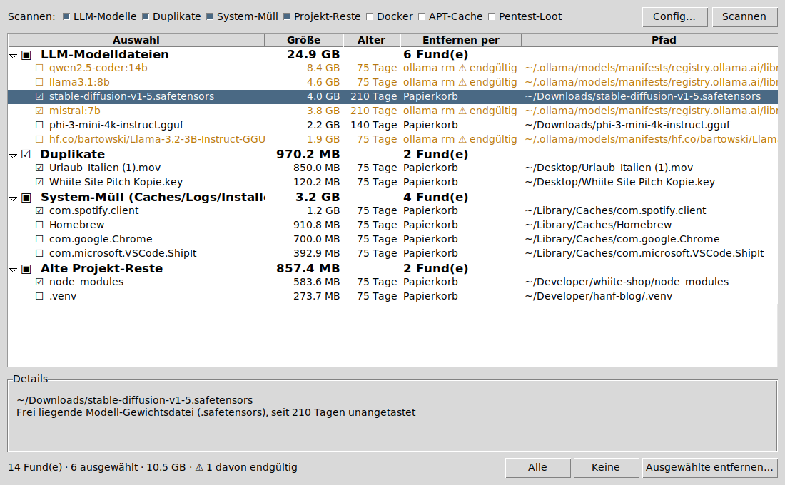

KI-/LLM-Modelle
Ollama-Modelle (auch von Hugging Face) und lose Gewichtsdateien wie .gguf, .safetensors, .ckpt (ab 500 MB) – jeweils seit 30 Tagen unbenutzt.
Findet alte KI-Modelle, doppelte Dateien, vergessene Caches und Projekt-Reste. Erklärt bei jedem Fund, was er ist und warum er vorgeschlagen wird – und entfernt nur, was du selbst abhakst.

Sieben Kategorien, jede einzeln an- und abschaltbar. Alles mit Mindestalter und Mindestgröße, damit nur wirklich Vergessenes auftaucht.
Ollama-Modelle (auch von Hugging Face) und lose Gewichtsdateien wie .gguf, .safetensors, .ckpt (ab 500 MB) – jeweils seit 30 Tagen unbenutzt.
Byte-identische Dateien in Downloads, Schreibtisch und Dokumente. Die älteste Kopie bleibt als Original – und die letzte Kopie wird nie entfernt.
Alte App-Caches und Logs in ~/Library, Xcode-DerivedData, npm-/pip-Caches und vergessene .dmg/.pkg-Installer.
node_modules, venv, build, dist & Co. in Projekten, die seit 60 Tagen niemand angefasst hat – jederzeit neu erzeugbar.
Verwaiste Images, gestoppte Container (älter als 7 Tage) und nicht mehr genutzte Volumes.
Für Kali/Linux: alte .deb-Pakete (nur Bericht, braucht sudo) und alte Engagement-Ordner unter ~/loot & Co.
Einmalig etwa fünf Minuten. Du brauchst kein Programmier-Wissen – nur zum Einrichten einmal das Terminal.
Lade den Installer von python.org/downloads/macos (neueste Version 3.x, „macOS 64-bit universal2 installer“) und installiere ihn wie jedes andere Programm.
/usr/bin/python3 enthält eine veraltete Grafik-Bibliothek (Tk 8.5) – das Fenster bliebe schwarz. Mit Homebrew geht alternativ auch brew install python python-tk.Ohne Terminal: ZIP herunterladen, doppelklicken zum Entpacken und den Ordner z. B. in deinen Benutzerordner legen.
Mit Terminal (⌘ + Leertaste → „Terminal“) – so lässt es sich später mit git pull aktualisieren:
cd ~
git clone https://github.com/whiitesite-collab/mac-cleanup-tool.gitIm Finder im Ordner mac-cleanup-tool auf Aufraeumen.command doppelklicken. Es sucht sich das passende Python selbst.
Oder im Terminal:
cd ~/mac-cleanup-tool
python3 cleanup.py guiAufraeumen.command → Öffnen → nochmal Öffnen. Das ist nur beim ersten Mal nötig.Beim ersten Scan fragt macOS, ob das Terminal auf Downloads, Dokumente und Schreibtisch zugreifen darf – mit Erlauben bestätigen, sonst findet der Scan dort nichts.
Drei Schritte. Der Scan liest nur – verändert wird erst etwas, wenn du auswählst und bestätigst.
Oben die Kategorien anhaken – z. B. nur LLM-Modelle und Duplikate – und auf Scannen klicken.
Klick auf einen Fund zeigt unten, was er ist und warum er vorgeschlagen wird. Klick auf ☐ wählt ihn aus, Klick auf die Kategorie wählt alle darin. Doppelklick zeigt die Datei im Finder.
Ausgewählte entfernen… → bestätigen. Dateien landen im Papierkorb. Leere danach den Papierkorb – erst dann ist der Platz wirklich frei.
ollama rm bzw. docker – sie landen nicht im Papierkorb. Das Bestätigungsfenster weist extra darauf hin. Ollama-Modelle lassen sich mit ollama pull jederzeit neu laden.Aufräum-Tools, die zu viel löschen, sind schlimmer als volle Festplatten. Deshalb gelten feste Regeln – unabhängig davon, was ein Scan findet.
~/.cleanup-tool-trash.~/.ssh und Datenschutz-Daten werden nie angefasst.$HOME wird nie etwas verändert; nichts läuft mit Admin-Rechten.Alles, was die Oberfläche kann, geht auch per Kommandozeile – praktisch für Linux-Server oder zum Automatisieren.
# Nur Bericht – verändert nichts (schreibt zusätzlich report.json)
python3 cleanup.py scan
# Bericht + interaktiv aufräumen: fragt pro Kategorie nach Nummern (1,3,5 · all · Enter = keine)
python3 cleanup.py clean
# Nur bestimmte Kategorien
python3 cleanup.py scan --category llm duplicates
# Mit eigener Konfiguration
python3 cleanup.py gui --config config.json--category| Name | Findet | Entfernt per |
|---|---|---|
llm | Ollama-Modelle, lose Modelldateien | ollama rm (endgültig) bzw. Papierkorb |
duplicates | Byte-identische Dateien | Papierkorb |
junk | Caches, Logs, alte Installer | Papierkorb |
projects | Alte Build- und Abhängigkeitsordner | Papierkorb |
docker | Dangling Images, gestoppte Container, verwaiste Volumes | docker rmi/rm/volume rm (endgültig) |
apt | APT-Paket-Cache (Linux) | nur Bericht – Befehl sudo apt-get clean selbst ausführen |
loot | Alte Pentest-Ausgaben (Linux) | Quarantäne |
all | alle oben (Standard) | – |
Die Standardwerte passen für die meisten. Anpassen geht über eine eigene config.json: Vorlage kopieren, Pfade ändern, mit --config oder im Fenster über Config… laden. Es reicht, nur die Werte einzutragen, die du ändern willst.
cp config.example.json config.json # macOS
cp config.linux.example.json config.json # Linux/Kaliduplicate_dirs) ersetzen den Standard komplett – wer einen Ordner hinzufügen will, trägt die Standard-Ordner mit ein. config.json ist per .gitignore vom Repo ausgeschlossen.| Schlüssel | Standard (Mac) | Bedeutung |
|---|---|---|
llm_model_dirs | ~/Downloads, ~/Documents, ~/models | Wo nach losen Modelldateien gesucht wird |
llm_model_extensions | .gguf .bin .safetensors .ckpt .pt | Welche Dateiendungen als Modell gelten |
llm_model_min_size_mb | 500 | Kleinere Modelldateien werden ignoriert |
llm_model_min_age_days | 30 | Mindestalter für Modelle (auch Ollama) |
system_junk_dirs | ~/Library/Caches, ~/Library/Logs, Xcode DerivedData, npm-/pip-Cache | Cache-/Log-Ordner; jeder Unterordner ist ein Fund |
system_junk_min_age_days | 14 | Mindestalter für Caches und Logs |
installer_dirs / installer_extensions | ~/Downloads · .dmg .pkg | Wo und welche Installer gesucht werden |
installer_min_age_days | 30 | Mindestalter für Installer |
project_roots | ~/Developer, ~/Projects, ~/WhiiteStudio | Wo nach Projekten gesucht wird |
project_leftover_names | node_modules, venv, .venv, __pycache__, dist, build, target, DerivedData, .gradle | Ordnernamen, die als neu erzeugbar gelten |
project_leftover_min_age_days | 60 | Mindestalter für Projekt-Reste |
duplicate_dirs | ~/Downloads, ~/Desktop, ~/Documents | Wo nach Duplikaten gesucht wird |
duplicate_min_size_mb | 5 | Kleinere Dateien werden nicht verglichen |
docker_min_age_days | 7 | Jüngere Images/Container werden nicht vorgeschlagen |
apt_cache_dir / apt_cache_min_age_days | /var/cache/apt/archives · 14 | APT-Cache (nur Linux, nur Bericht) |
pentest_loot_dirs / pentest_loot_min_age_days | ~/loot, ~/.msf4/loot, ~/nmap-output, ~/engagements · 30 | Pentest-Ausgaben (Linux) |
protected_paths | Keychains, Mail, Messages, MobileSync, CloudStorage, ~/.ssh, TCC | Wird nie angefasst, egal was ein Scan findet |
min_untouched_hours | 24 | Kürzlich geänderte Dateien gelten als „in Benutzung“ |
Etwas klappt nicht? Die häufigsten Stolpersteine und ihre Lösung.
Du startest mit Apples mitgeliefertem Python, das nur Tk 8.5 enthält. Prüfen im Terminal:
python3 -c "import tkinter; print(tkinter.TkVersion)"Zeigt es 8.5: Python von python.org installieren (oder brew install python python-tk) und danach Aufraeumen.command doppelklicken – es wählt automatisch das neue Python.
Klick auf einen rot markierten Fund – unten unter „Details“ steht der Grund, oft direkt mit Lösung. Die häufigsten:
„macOS verweigert den Zugriff“ → Systemeinstellungen → Datenschutz & Sicherheit → Festplattenvollzugriff → Terminal (bzw. Python) hinzufügen, Tool neu starten.
„keine Berechtigung, Finder zu steuern“ → Systemeinstellungen → Datenschutz & Sicherheit → Automation → bei Terminal „Finder“ aktivieren.
„'ollama' konnte nicht gestartet werden“ → Ollama ist nicht installiert oder nicht gestartet. Das Modell kannst du auch direkt mit ollama rm <name> entfernen.
„Übersprungen – letzte verbliebene Kopie“ → Absicht: du hattest alle Kopien einer Datei ausgewählt, eine bleibt erhalten.
Die Dateien liegen noch im Papierkorb. Erst wenn du ihn leerst (Rechtsklick auf den Papierkorb im Dock → Papierkorb entleeren), wird der Platz frei. Unter Linux: ~/.cleanup-tool-trash selbst leeren.
Papierkorb öffnen, Datei auswählen, Rechtsklick → Zurücklegen. Unter Linux die Datei aus ~/.cleanup-tool-trash zurückverschieben – die Ordnerstruktur dort spiegelt die Originalpfade. Welche Dateien entfernt wurden, steht im Protokoll unter ~/.cleanup-tool-logs/.
Homebrew-Python: brew install python-tk. Kali/Debian/Ubuntu: sudo apt install python3-tk. Die Terminal-Befehle scan und clean funktionieren auch ohne tkinter.
Mit git installiert: cd ~/mac-cleanup-tool && git pull. Per ZIP installiert: neue ZIP laden und den alten Ordner ersetzen (deine config.json vorher sichern).
Ja. Standardpfade und Entfernungsweg passen sich automatisch an: statt des Papierkorbs wird nach ~/.cleanup-tool-trash verschoben, zusätzlich gibt es die Kategorien apt und loot. Vorlage: config.linux.example.json.
Reines Python mit der Standardbibliothek – keine Abhängigkeiten, kein Build-Schritt.
# Tests (laufen in einem temporären Fake-Home, fassen nichts Echtes an)
python3 -m unittest discover -s tests| Datei | Inhalt |
|---|---|
cleanup.py | Einstiegspunkt: scan / clean / gui |
Aufraeumen.command | Doppelklick-Starter für macOS, wählt ein Python mit Tk ≥ 8.6 |
cleaner/scanners.py | Die Scanner – verändern nie etwas |
cleaner/trash.py | Entfernen: Papierkorb, Quarantäne, ollama rm, docker; Schutz der letzten Kopie |
cleaner/gui.py | Die Oberfläche (tkinter) |
cleaner/config.py | Standardpfade, Schwellwerte, geschützte Orte |
tests/ | Regressionstests (unittest) |
Fehler gefunden oder eine Idee? Issue auf GitHub öffnen.